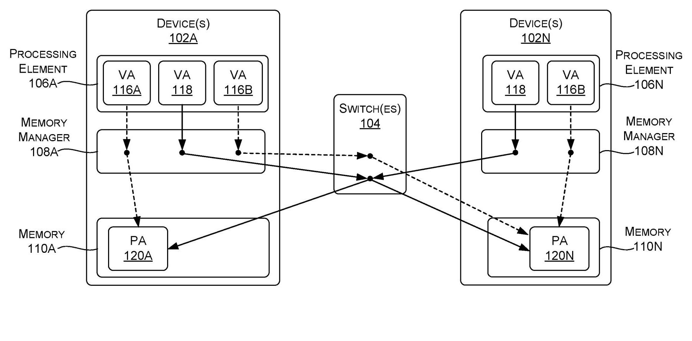
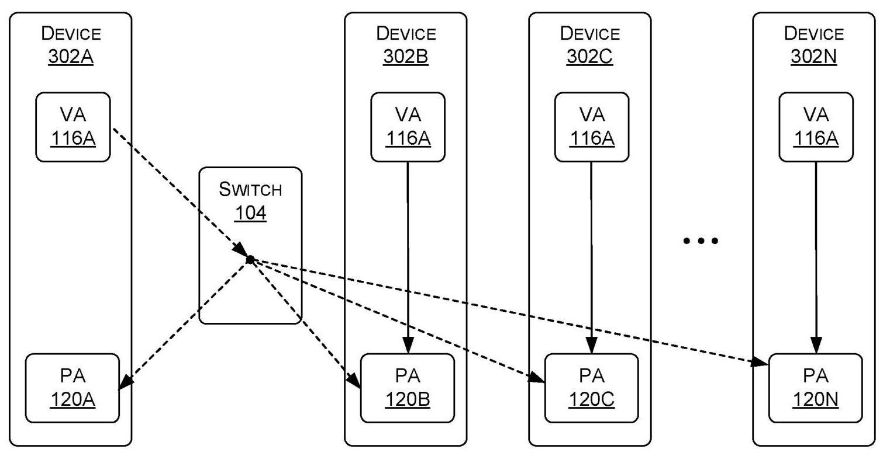
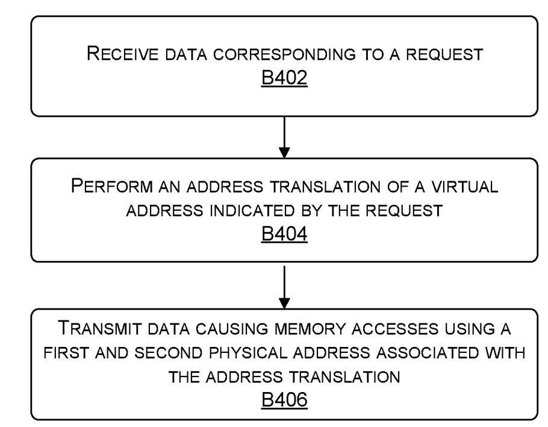
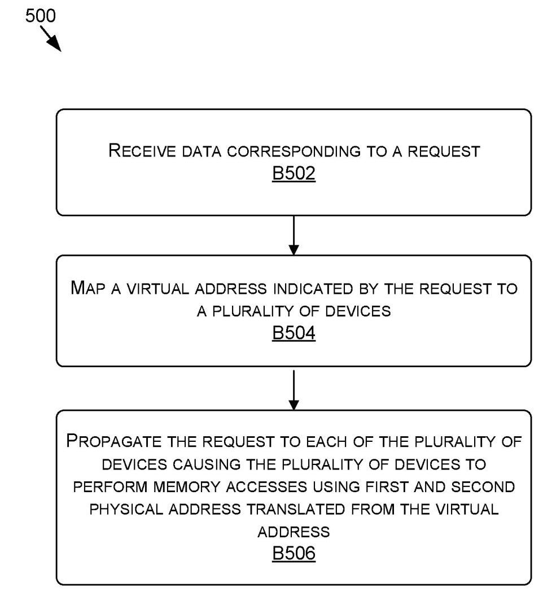

Multicast and Reflective Memory Behavior for Memory Model Consistency 深度解读
发明人：Glenn Alan Dearth; Mark Hummel; Daniel Joseph Lustig
公开信息：United States Patent Application Publication, US 2023/0229599 A1, 2023-07-20；申请人为 NVIDIA Corporation
一句话总结：这份专利提出把一个 memory access request 映射到多个物理地址的 multicast memory model，并用 separate VA space、multicast instructions、producer/consumer 权限约束和 reflective access path 来维持与传统 unicast memory model 一致的可观察行为。
一、问题定义
这份材料不是传统学术论文，而是一份美国专利公开文本。因此它的论证方式不是“提出假设并做实验验证”，而是围绕可申请的系统、方法与设备 claims 展开。核心问题仍然很清楚：在多 GPU、多 processing element 的协作计算中，传统 memory model 通常让一个 virtual address (VA) 映射到一个 physical address (PA)，这样任何 SM 或其他 processing element 使用同一个 VA 时都能访问同一处内存，从而维持 coherent memory interface。但 collective 操作，例如 all-reduce，需要从多个设备收集值并把结果再广播回多个设备；如果完全用 unicast request 实现，参与设备越多，请求数量、链路带宽压力和尾延迟越高。
专利的切入点是把“同一个请求只能访问一个 PA”的假设放松：一个 request 可以携带一个 VA，而该 VA 被翻译到多个 PA，分别对应多个 processing element 或设备的 local memory。这样，系统可以把一次 store、load、reduce 或 reducing load 传播到一个 multicast group，而不是让软件显式发出 N 次类似的请求。
动机评估：动机是 solid 的。背景段明确指出 all-reduce 在 deep learning 中高频出现，且收集和广播都可能随着参与 processing elements 数量线性增长。专利没有给出定量 profiling，但问题本身与多 GPU 训练、NVLink/NVSwitch 类互连和分布式 shared memory/collective communication 的实际瓶颈一致。弱点是它没有证明 multicast memory request 在具体硬件上能带来多少收益，也没有对比已有 collective offload 或通信库方案；它更像是在定义硬件/driver/地址翻译层面的可行机制和权利范围。
核心 Insight：只要 memory model 对程序暴露的结果仍与 unicast model 一致，底层不必真的逐个执行 unicast request。系统可以把 VA translation、switch propagation 和 access path constraints 组合起来，使一个逻辑 memory operation 在多个 PA 上执行，同时用权限、路径和顺序约束避免 multicast 与 unicast 混用时产生不可预测结果。这个 insight 把性能优化问题转化成了 memory consistency 问题：关键不是“能不能复制请求”，而是“复制之后程序还能不能观察到与原 memory model 相容的结果”。
二、相关工作
专利文本没有独立的 Related Work 章节，也没有学术引用；它只通过 Background 和 Detailed Description 隐式对比了几类已有思路。
第一类是传统 unicast virtual memory model。它的优点是语义简单：一个 VA 通常对应一个目标 PA，所有设备通过同一映射访问同一位置，coherency 的边界清晰。问题在于它天然按单目标访问建模，遇到 all-reduce、broadcast、replicated load 这类多目标操作时，需要软件或运行时发出多次请求。
第二类是软件 collective 或通信库路径。它可以在应用层安排 reduce 和 broadcast，但对 memory model 本身透明度较低：程序通常要调用通信原语、管理 buffer，并承担更多同步和调度逻辑。该专利的方向是把一部分 collective 行为下沉到 memory access request 处理路径，让 VA、MMU、switch 和 driver 共同完成 fanout 或 aggregation。
第三类是硬件互连与 switch-based routing。已有高性能互连可以让 GPU 间互访，但专利强调的不是单纯 routing，而是让 switch 或 memory manager 参与 VA-to-multiple-PA 的 mapping，并在必要时反射回请求源设备，以消除本地短路径和远端长路径之间的 ordering 差异。
因此，这份专利的“相关工作差距”可以概括为：传统 unicast model 保护一致性但多目标访问开销高；软件 collective 可表达多目标语义但需要显式参与；普通互连能转发数据但不必然提供 multicast VA space 与一致性约束。本文方案试图把三者合并为一种对应用显式或隐式可用的 memory model 扩展。
三、技术挑战
挑战 1：一个 VA 对多个 PA 的语义必须仍然可理解。 传统虚拟内存把 VA 当作单一位置的名字；一旦 VA 可以指向多个 PA，load、store、atomic、reduce 的含义会变得不直观。专利通过 separate multicast/unicast VA space、专用 multicast instruction，以及 mismatch fault 规则来限制歧义。
挑战 2：multicast 和 unicast 混用会破坏顺序直觉。 如果一个 multicast store 走 switch fanout，而随后一个 unicast store 走设备内部短路径，那么后发的 unicast store 可能先到达本地 PA。程序如果期望 request issue order 等价于各 PA 上的可见顺序，就会看到不稳定结果。
挑战 3：本地路径与反射路径延迟不同。 请求源设备访问自己的 local memory 可以直接走内部路径；访问其他设备则可能经过 switch。若对源设备使用短路径、对其他设备使用长路径，同一个 logical multicast operation 在不同设备上可能呈现不同时间点。专利引入 reflective memory behavior，让某些请求也经 switch 反射回源设备，以统一路径属性。
挑战 4：系统需要决定 multicast 是显式还是透明。 如果让应用显式创建 multicast VA 或使用 Store-MC/Reduce-MC 指令，语义控制更清楚，但需要软件改写。若系统透明地把 unicast patterns 优化成 multicast，兼容性更好，但需要 driver、page table、TLB 或监控逻辑识别安全场景。
挑战 5：专利 claims 需要覆盖多个实施位置。 该方案可以由 memory manager 做 VA translation，也可以由 switch 做 mapping 和 propagation，还可以作为 one or more devices 的硬件组件组合实现。不同实现位置的边界必须在方法 claims 中拆开描述。
四、解决方案
整体思路
专利提出的机制可以分成两层。第一层是 multicast addressing：某个 VA 被识别为 multicast VA，或者某条 instruction 被识别为 multicast instruction；memory manager 或 switch 将它翻译为多个 PA，并对多个设备或 processing elements 执行对应 memory accesses。第二层是 consistency constraints：系统限制哪些设备能写、哪些路径必须经过 switch、哪些 mismatch 需要 fault、哪些情况允许透明优化，从而让 multicast 的可观察结果与 unicast 语义相容。

FIG. 1 是理解方案的主图。VA 116A/116B 是 unicast VA，分别指向单个 PA；VA 118 是 multicast VA，可以从 device 102A 或 device 102N 发出，并经 memory manager/switch 映射到 PA 120A 和 PA 120N。图中的关键点不是“switch 能转发包”，而是 VA 命名空间本身区分了单目标访问与多目标访问。
贯穿示例
设想 4 张 GPU 正在训练同一个模型，每张 GPU 都有一份局部梯度 buffer。传统做法中，如果 GPU0 想把一个更新值写入所有 GPU 的对应 buffer，运行时可能要发 4 次 store 或调用一段 collective 通信逻辑。用这份专利的机制，driver 或应用先创建一个 multicast alias，例如 VA_mc = CreateMulticastAlias(VA0, VA1, VA2, VA3)。随后 GPU0 对 VA_mc 发出 Store-MC，memory manager 或 switch 把这个 VA 翻译到 4 个 PA，并向每张 GPU 的 local memory 传播 store。若之后消费者 GPU 只需要读自己的 replica，就可以走本地 load；若生产者 GPU 的 load/store 顺序可能与其他设备不同，系统可以要求它也通过 switch 反射访问，避免本地短路径先完成导致的顺序异常。
这个例子串起了三件事：multicast alias 负责表达“同一逻辑地址对应多个副本”；multicast instruction 或 VA space 负责告诉硬件这不是普通 unicast；reflective path 和 producer/consumer 权限负责让优化不改变程序期望的结果。
关键技术点
1. Separate VA spaces 或 instruction encoding。 专利给出两种表达 multicast 的方式：一种是把 VA 划分为 unicast VA space 和 multicast VA space，VA 本身决定翻译结果；另一种是使用专门 multicast instructions 或共享 instruction 的参数来指示 multicast/unicast。前者的优点是可以保留 unicast syntax，后者的优点是语义在 instruction 层更直接。
2. 操作类型规则。 FIG. 2 的表格给出一组示例规则：普通 Store/Load/Atomic/Reduce 面对 unicast VA 正常执行；面对 multicast VA 时可以 fault 或只作用于 target PA。Reducing Load、Store-MC、Reduce-MC 属于 multicast 指令，面对 unicast VA 时 fault，面对 multicast VA 时执行 multicast 语义。这个表的作用是明确 mismatch behavior，避免程序员或硬件在“指令是 multicast 但地址是 unicast”这类组合上产生隐式解释。
3. Reducing load、multicast store 与 reduce multicast。 Reducing load 会从 multicast group 的多个 PA 取回 N 个值，再用 sum、average、min、max、bitwise operation 等方式合并成 aggregated data。Store-MC 把一个或多个值写到多个节点。Reduce-MC 类似对多个 PA 执行 atomic/reduce，但不向请求者返回结果。这几类指令覆盖了 collective communication 中常见的 broadcast 和 reduction 模式。
4. Reflective memory behavior。 当源设备访问自己的 local memory 时，内部路径通常更短；但如果 multicast 请求对源设备走内部路径、对其他设备走 switch，就可能产生 ordering skew。专利提出让 producer 的某些请求也转发到 switch，再反射回自身，从而让本地 PA 与远端 PA 经历类似的 ordering point。

FIG. 3 展示的是带约束的 multicast 场景。device 302A 可以作为 producer，经 switch 104 把 VA 116A 相关访问传播或反射到多个 PA；其他 device 302B/302C/302N 可以作为 consumer，从本地 replica 读取。图中虚线表示通过 switch 的传播/反射路径，实线表示本地 VA 到 PA 的访问；专利用这种路径约束来减少 race condition 和路径延迟差异带来的不一致。
5. 显式 hint 与自动 pattern recognition。 系统可以由应用通过 API/driver message 显式提示哪些 VA 需要 replication 或 multicast，也可以通过计数器、监控或 pattern recognition 发现某些 VA 经常被多个请求写入相同值或被多个设备读取，从而动态把 VA 迁移到 multicast/replicated 处理路径。这一点让方案既能服务新 API，也能作为旧程序的透明优化。
6. Claims 的实现边界。 Claims 1-9 偏向 memory manager/MMU：接收 request，翻译 VA 到多个 PA 或 intermediate addresses，再传输数据触发多处访问。Claims 10-17 偏向 switch：接收 request，map VA 到多个 devices，propagate request。Claims 18-20 则把范围提升到 one or more devices/hardware components，并特别覆盖 reducing load 的聚合返回。

FIG. 4 把 MMU 侧流程压缩成三步：接收请求、执行地址翻译、发送会导致多个 PA 上 memory accesses 的数据。这对应 claim 1 的主干。

FIG. 5 则是 switch 侧主干：接收请求、把 VA 映射到多个 devices、向每个 device 传播请求。它对应 claim 10 的主干，说明专利并不把 multicast translation 固定在 MMU 内部。
与已有方案的对比
相比纯软件 collective，这个方案的优势是能把 fanout、aggregation 和 replication 放到 memory system/互连层，减少应用显式发起的重复 request 数量，也可能减少 collective 操作的尾延迟。相比传统 unicast VA model，它扩展了地址翻译语义，让一个 VA 可以自然表达一组 PA。相比简单硬件 multicast routing，它额外关心 memory model consistency，通过 mismatch fault、producer/consumer 权限和 reflective path 约束来避免程序观察到不一致。
不足也很明显。专利没有给出任何性能数据，也没有说明硬件成本、TLB/page table 扩展成本、fault/transition 开销、switch aggregation 复杂度，或与现有 GPU memory consistency model 的精确定义如何组合。它描述的是一组可实施机制和权利范围，而不是一个完整可复现实验系统。
五、实验评估
实验设定
本文没有实验评估。它没有提供硬件原型、模拟器、baseline、benchmark、latency/bandwidth 指标或 all-reduce workload 的定量结果。FIG. 4-6 是方法流程图，不是实验流程；FIG. 7-8 是通用 computing device 和 data center boilerplate。
主要实验与结论
没有可报告的实验数据。能够从文本中提取的“效果声明”主要是定性判断：multicast 可以减少本来需要多个 unicast requests 的请求数量；replicated local load 可以让 consumer 从本地 replica 读取，而不是经较慢路径访问同一 PA；reflective path 可以避免本地短路径造成的 ordering 差异。但这些都是设计动机和实施例推理，并非经测量验证的结果。
结论支撑性分析
作为专利文本，它足以支撑“存在一种系统/方法可以这样实现”的权利要求框架；作为论文证据，它对性能收益的支撑不足。最缺的是三个实验：第一，N 张 GPU 上 multicast store/reducing load 相比软件 collective 或 N 次 unicast 的延迟/带宽对比；第二，reflective path 带来的额外延迟与一致性收益；第三，自动 pattern recognition 触发 multicast replication 的误判率、迁移开销和适用 workload。
六、附加洞察
结论 1：专利并不要求 multicast 必须暴露给应用，系统可以透明替换 unicast pattern。
- 出处：Summary [0004]、Detailed Description [0038]-[0054]。
- 推理链条：文本先说明 multicast 可以由 separate instructions 或 multicast VA 显式表达，再说明系统也可以在 process/application 不感知的情况下决定使用 multicast；随后给出 hint、counter、pattern recognition 和 fault transition 的实现路径。因此该方案的权利范围覆盖“新 API”与“旧程序透明优化”两条路线。薄弱点是透明优化对 memory consistency 判断要求更高，专利没有给出静态或动态判定的完整算法。
结论 2：reflective access path 的主要价值不是性能，而是一致性。
- 出处：Detailed Description [0037]-[0045]。
- 推理链条：文本先指出多个 multicast/unicast operation 由于各路径延迟不同可能乱序；再举例说明后发的本地 unicast store 可能早于先发的 multicast store 完成；最后提出 producer 请求经 switch 反射回本地，以避免短内部路径绕过统一 ordering point。因此 reflective behavior 是为了解决路径不对称导致的可观察差异，而不只是为了让数据“回到自己”。
结论 3：producer/consumer 权限约束是把 replicated memory 做成安全优化的关键。
- 出处：Detailed Description [0041]-[0042]、[0047]-[0048]。
- 推理链条：如果多个设备都能写同一 VA 的多个 replica，就会出现 race 和副本分歧；专利把某些设备定义为 producer，其他设备定义为 read-only consumer，使写入来源受控，消费者从本地 replica 读取时不必与其他写者竞争。这个推理合理，但依赖 workload 符合单生产者或受控生产者模式。
结论 4：层次化 multicast group 暗示该机制可以跨多个 switch 扩展。
- 出处：Detailed Description [0021]。
- 推理链条：文本说明多个 switch 可以形成不同 multicast groups，且 group/subgroup 可具有层次关系，subgroup 结果可以作为 group 中一个节点的结果。这为大规模系统中的分层 reduction/broadcast 留出空间，但专利没有展开具体树形算法、负载均衡或故障处理。
七、总结与评价
这份专利的核心贡献是把 collective-style 多目标访问纳入 memory model：一个 VA 或一条 multicast instruction 可以触发多个 PA 上的 memory accesses，并可在 switch 或 MMU 层完成 fanout/aggregation。它最有价值的部分不是“支持 multicast”这个单点，而是把 multicast 与 coherent memory interface 绑定起来，明确讨论了 VA space、instruction mismatch、producer/consumer 权限和 reflective path。
最大的亮点是视角贴近现代多 GPU 系统：all-reduce、replicated local load、switch aggregation 和路径一致性确实是高性能 GPU 互连中的真实问题。最大的不足是缺少可验证的性能和一致性模型细节；专利说明了很多“可以这样做”的实施例，但没有说明哪种组合在真实硬件中最划算。后续若把它发展成研究论文，最值得补的是形式化 memory consistency 条件、硬件实现成本，以及深度学习 collective workload 下的端到端收益。
八、章节脉络与段落速览
- Front Matter · Publication Metadata：给出公开编号、日期、标题、申请人、发明人、分类号和摘要。
- ¶封面：标识 US 2023/0229599 A1、NVIDIA 申请人、三位发明人和公开日期。
- ¶Abstract：概括一个 request 可被传播到多个 PA，并说明 multicast 可显式暴露或由系统透明决定，同时需施加一致性约束。
-
¶Figures/Table：列出 FIG. 1-8 与 FIG. 2 操作表，其中 FIG. 1-6 是技术核心，FIG. 7-8 是通用系统环境。
-
BACKGROUND [0001]-[0002]：提出多 processing element 协作计算中的 unicast memory model 开销问题。
- ¶0001：说明 GPU/SM 等 processing elements 通过 VA-to-PA memory model 协调读写，传统 coherent interface 通常让一个 VA 指向一个 PA。
-
¶0002：用 all-reduce 说明收集和广播会随参与 processing elements 数量增加而增加请求数，进而带来延迟和带宽压力。
-
SUMMARY [0003]-[0004]：概括 multicast memory access request 与一致性约束。
- ¶0003：声明公开内容是用于 memory model consistency 的 multicast 和 reflective memory behavior。
-
¶0004：说明单个 request 可以传播到多个 PA，multicast 可通过专用指令、共享指令参数、VA 或系统透明决策触发，并受 coherent interface 约束。
-
BRIEF DESCRIPTION OF THE DRAWINGS [0005]-[0013]：索引每张图的作用。
- ¶0005-0011：分别说明 FIG. 1 的 separate VA space、FIG. 2 的操作规则表、FIG. 3 的约束模型、FIG. 4-6 的方法流程。
-
¶0012-0013：说明 FIG. 7-8 是可承载实施例的 generic computing device 和 data center。
-
DETAILED DESCRIPTION [0014]-[0016]：重新定义总体方案。
- ¶0014：重申目标是在 processing elements 之间提供 multicast request，同时保持 unicast memory model 兼容性。
- ¶0015：说明 request 指示 VA，VA 可映射到多个 PA，switch 可在设备内部或外部传播请求。
-
¶0016：说明 process 可显式指定 multicast group/VA，也可让系统透明选择 multicast/unicast，并通过约束保持 coherent interface。
-
FIG. 1 Embodiment [0017]-[0031]：解释 separate unicast/multicast VA spaces。
- ¶0017-0024：定义 collaborative processing environment，包括 devices、switch、processing elements、memory managers 和 local memories。
- ¶0025-0026：说明 VA 可先翻译成 PA 或 intermediate address，再由 switch/TLB/设备继续翻译到 PA。
- ¶0027-0028：对比 unicast VA 116A/116B 与 multicast VA 118，后者能映射到 PA 120A 与 PA 120N。
- ¶0029-0030：给出
Malloc()和CreateMulticastAlias()风格 API，说明 multicast VA 可由已有 unicast VA 的 PA 组成。 -
¶0031：说明也可以不用 separate VA spaces，而由 instruction 或 operand 指示 multicast/unicast。
-
FIG. 2 Operation Rules [0032]-[0036]：说明不同指令和地址空间组合的行为。
- ¶0032：描述 mismatch 处理策略，unicast instruction 对 multicast VA 可 fault 或作用于 target PA，multicast instruction 对 unicast VA 可 fault。
- ¶0033：说明源设备本地路径可能比经 switch 反射路径更短，是否使用内部路径可由软件协议选择。
- ¶0034-0035：定义 reducing load，并说明 aggregation 可在 switch 或设备上完成。
-
¶0036：定义 multicast store 和 reduce multicast。
-
Ordering and Constraints [0037]-[0054]：讨论为什么需要 reflective behavior 和权限/路径约束。
- ¶0037-0038：指出异步 multicast/unicast 混用可能因路径延迟导致乱序，并说明系统可用约束隐藏 multicast。
- ¶0039-0040：引入 FIG. 3 的 constrained collaborative processing environment。
- ¶0041-0042：用 producer/write access 与 consumer/read-only access 避免多个写者造成 race。
- ¶0043-0045：要求某些 producer 请求经 switch 反射回源设备，以避免本地短路径绕过顺序。
- ¶0046-0048：允许软件声明 no race condition，并要求 multicast 结果与 non-multicast 结果一致。
- ¶0049-0051：说明 multicast 可替代多个 unicast requests 或预先复制数据以加速后续 local loads。
-
¶0052-0054：给出 hint、API、driver-level message、counter 和 pattern recognition 等触发方式。
-
Method 400 [0055]-[0059]：描述 memory manager/MMU 侧方法。
- ¶0055-0056：说明流程图 block 可由硬件、固件或软件执行。
- ¶0057：接收来自 processing element 的 memory access request。
- ¶0058：对 request 中的 VA 做地址翻译，得到至少两个 PA。
-
¶0059：向 switch 或后续组件传输翻译结果，触发多个 memory accesses。
-
Method 500 [0060]-[0063]：描述 switch 侧方法。
- ¶0060-0061：switch 接收来自 processing element 的 request data。
- ¶0062：switch 将 VA、intermediate address 或 PA 映射到多个 devices。
-
¶0063：switch 向每个 device 传播请求，使各 device 使用对应 PA 访问内存。
-
Method 600 [0064]-[0066]：抽象化总流程。
-
¶0064-0066：把方案压缩为“VA 翻译到多个 PA”和“使用多个 PA 执行 memory accesses”两步。
-
Example Computing Device [0067]-[0082]：给出通用计算设备实施环境。
- ¶0067-0069：说明 computing device 700 包含 memory、CPU、GPU、communication interface、logic units 等。
- ¶0070-0078：展开 interconnect、computer-readable media、CPU/GPU/logic unit 和通信接口的通用定义。
-
¶0079-0082：描述 I/O、power 和 presentation components，属于专利 boilerplate。
-
Example Data Center and Network [0083]-[0102]：给出数据中心、云和网络实施环境。
- ¶0083-0087：说明 data center infrastructure、framework、software 和 application layers。
- ¶0088-0092：描述 machine learning、training/inference 和 resource orchestration 场景。
- ¶0093-0099：描述 client-server、peer-to-peer、cloud 和 edge network environments。
-
¶0100-0102：给出 computer-executable instructions 与 claim interpretation 的通用法律文本。
-
Claims 1-20：把实施例拆成 MMU 方法、switch 方法和硬件设备范围。
- Claims 1-9：覆盖接收 request、将 VA 翻译到多个 PA/intermediate addresses 并发送数据触发访问的 memory manager/MMU 路径。
- Claims 10-17：覆盖 switch 接收 request、把 VA 映射到多个 devices 并传播请求的路径。
- Claims 18-20：覆盖由 hardware components 组成的设备实现，特别包含 loading values、combining aggregated value 并返回的 reducing load。